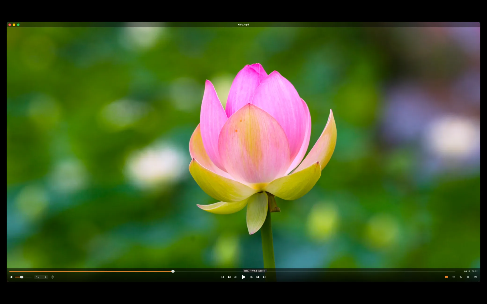
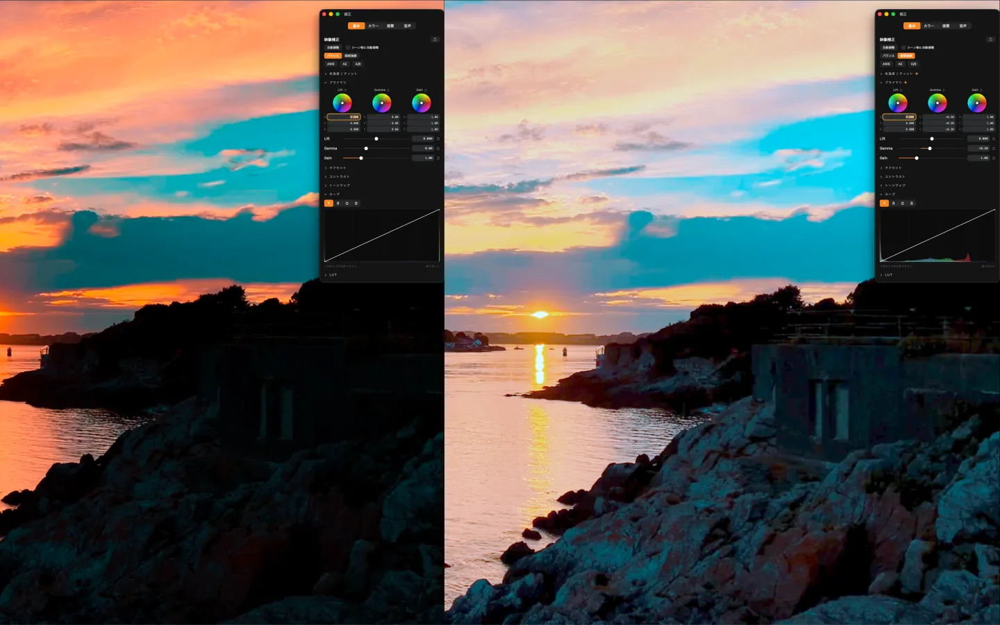
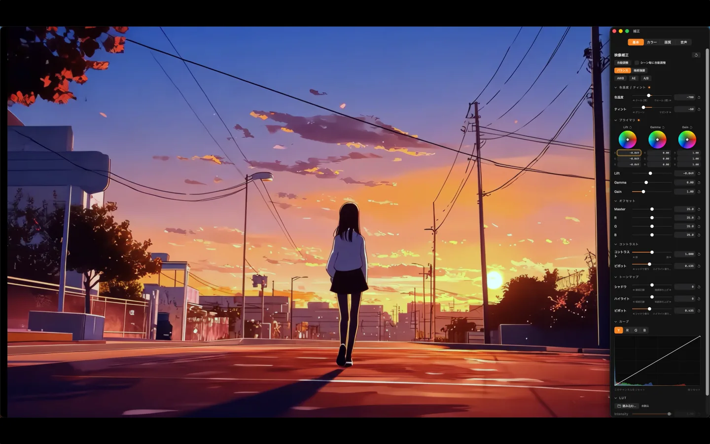
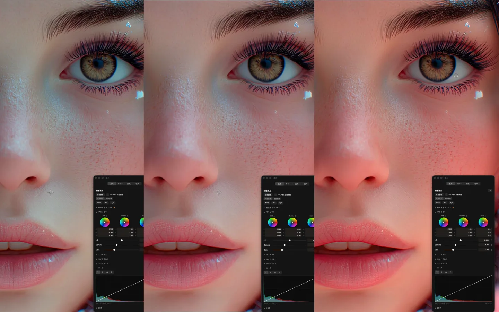
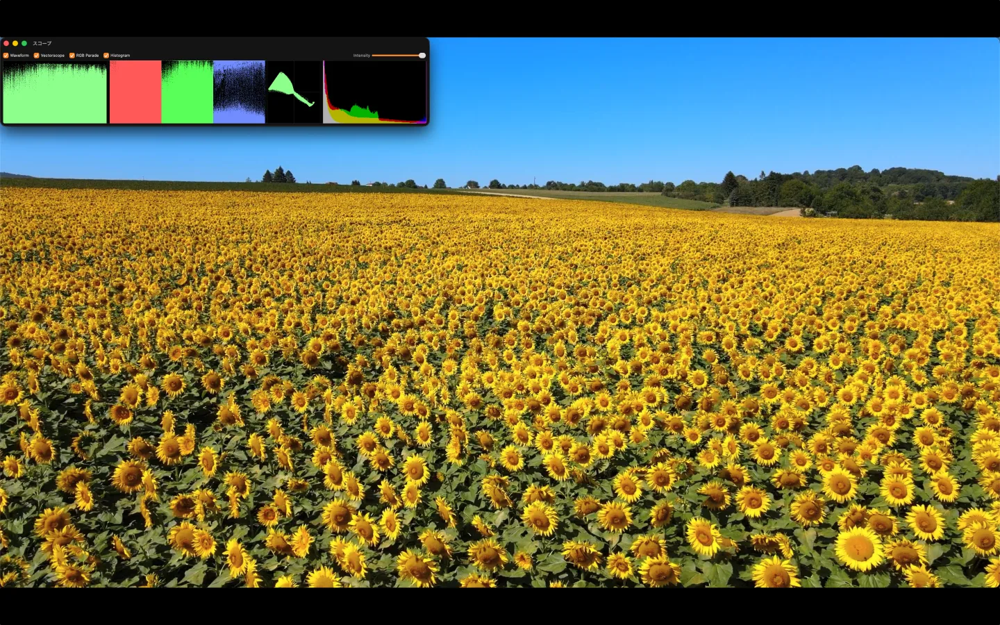

プロ品質のカラーグレーディングを積んだ、macOS 用の動画プレーヤー。再生しながら、リファレンス基準の色へ。
右半分は Kuro が自動調整した結果、左半分は元のままの映像です。仕切りを左右にドラッグして見比べてみてください。動いているのは、Kuro が実際に使っているのと同じ計算です。スライダーで自分で追い込むことも、「リセット」で元に戻すこともできます。
※ 移植しているのは Kuro 1.1 の色処理そのものです（Rec.709 Gamma 2.4 で符号化した空間での リフト／ゲイン、実測に基づく色温度の RGB ゲイン、輝度を保つ彩度、ピボット付きコントラスト）。 アップスケールやノイズ除去、HDR 表示といった機能はブラウザでは再現できないため含まれていません。

libmpv ベースで幅広いコンテナ・コーデックに対応。HDR コンテンツは EDR 表示へマッピングし、Mac の画面でハイライトを飛ばさず再現します。


Metal 製の自前レンダリングパイプラインで Rec.709 / Gamma 2.4 に準拠。本格的な補正をリアルタイムに適用できます。
MetalFX / Anime4K によるアップスケール、ノイズ除去、シャープ、Wiener デコンボリューションによるデブラー、そしてデバンド。mpv / madVR 系が踏み込まない領域まで実装しています。


波形・ベクトルスコープ・RGB パレード・ヒストグラムを、再生しながらリアルタイムに表示。目視だけに頼らず、基準に沿って色を追い込めます。
プレーヤーとしての基本、音声、そして計測はすべて無料で使えます。PRO で解放されるのは、色を自分で追い込むための道具です。
| 無料 | Kuro PRO | |
|---|---|---|
| カラーグレーディング | ||
| 自動調整 — ワンクリックで色を整える | ✓バランス | ✓全モード |
| シーン毎に自動調整 — カットが変わるたび追従 | ✓バランス | ✓暗部強調も |
| プライマリ（リフト / ガンマ / ゲイン） | — | ✓ |
| オフセット（ASC CDL） | — | ✓ |
| コントラスト / ピボット | — | ✓ |
| 3-Way カラー補正（シャドウ / ミッド / ハイライト） | — | ✓ |
| 色温度 / ティント | — | ✓ |
| 色相 / 彩度（HSL） | — | ✓ |
| カーブ（Y / R / G / B） | — | ✓ |
| トーンマップ（シャドウ / ハイライト / ピボット） | — | ✓ |
| AWB / AE アイドロッパー — 白や露出を画面から拾う | — | ✓ |
| A/B バイパス — 補正前後を一瞬で比較 | — | ✓ |
| LUT 読み込み（.cube） | — | ✓ |
| LUT 書き出し — 作った色を他のソフトへ | — | ✓ |
| 画質 | ||
| アップスケール — MetalFX / Anime4K / Apple ML | — | ✓ |
| ノイズリダクション（空間） | — | ✓ |
| ノイズリダクション（時間）— 動きに追従 | — | ✓ |
| シャープネス（アンシャープマスク） | — | ✓ |
| Wiener デブラー — 逆フィルタでぼけを復元NEW | — | ✓ |
| デバンド — 空やグラデーションの縞を除去NEW | — | ✓ |
| デインターレース | — | ✓ |
| プレーヤー | ||
| libmpv ベース — 幅広いコンテナ / コーデック | ✓ | ✓ |
| HDR → EDR 表示（BT.2390 トーンマップ） | ✓ | ✓ |
| フレーム単位の前後移動 | ✓ | ✓ |
| シークバーのサムネイルプレビューNEW | ✓ | ✓ |
| プレイリスト / フォルダを開く | ✓ | ✓ |
| URL を開く — http / https / rtsp / rtmp | ✓ | ✓ |
| 再生速度の変更 | ✓ | ✓ |
| 表示モード（フィット / フィル / 実際のサイズ） | ✓ | ✓ |
| フレームキャッシュ — コマ戻しを高速化 | ✓ | ✓ |
| 既定のプレーヤーに設定 | ✓ | ✓ |
| 音声・字幕 | ||
| 音声トラックの切り替え | ✓ | ✓ |
| A/V 同期調整（±50ms 単位） | ✓ | ✓ |
| ナイトモード — 音量を均一化 | ✓ | ✓ |
| 字幕トラックの切り替え・表示 / 非表示 | ✓ | ✓ |
| 計測・検証 | ||
| スコープ — 波形 / ベクトル / RGB パレード / ヒストグラム | ✓ | ✓ |
| スポットプローブ — 画面上の 1 点の RGB 値を読む | ✓ | ✓ |
| インスペクタ — コーデック / ビットレート / 実行 fps ほか | ✓ | ✓ |
| テスト信号 — グレースケール / カラーバー / PLUGE ほか | ✓ | ✓ |
| 表示ガンマの切り替え（sRGB / Gamma 2.4） | ✓ | ✓ |
| 色域のカラーマネジメント切り替え | ✓ | ✓ |
無料版でも自動調整（バランス）でワンタッチで色を整えられます。さらに追い込みたいときは、PRO 機能をアプリ内課金（買い切り）でいつでも解放。